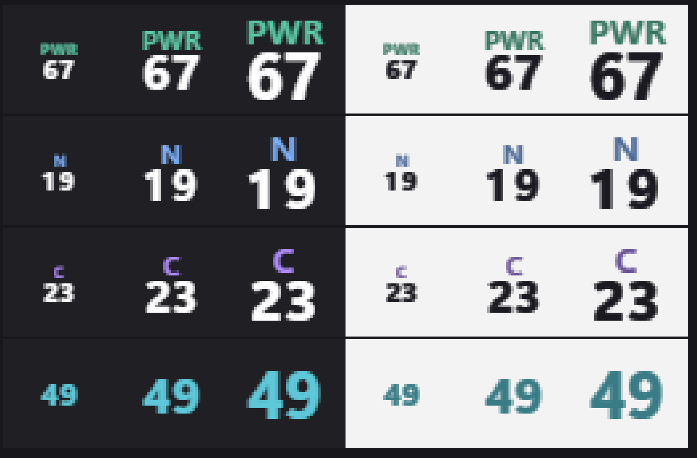
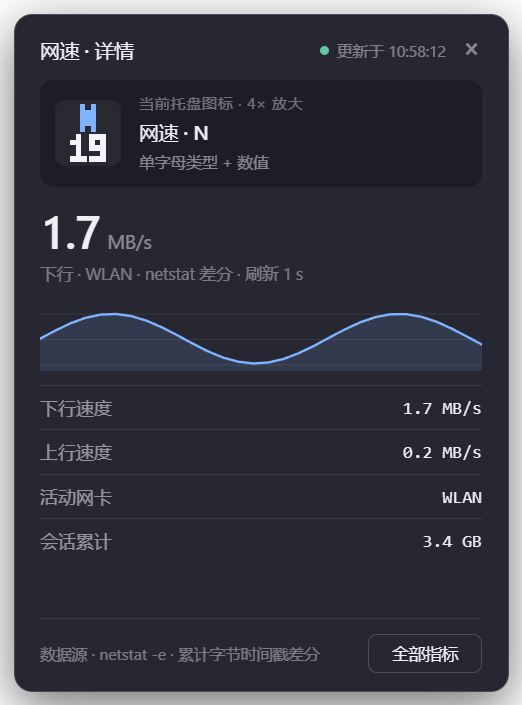
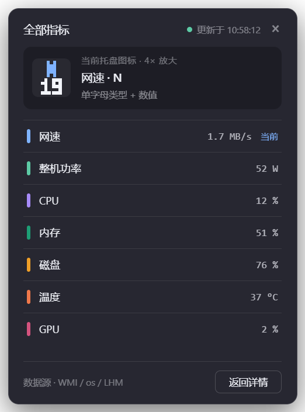

网速、整机功率、CPU、内存、磁盘、温度、GPU——一次只显示一种，右键切换，左键看详情。纯本地运行，不联网、不上传任何数据。
下载最新版 exe 查看源码免安装便携版与 NSIS 安装包均为 Windows x64；未做商业签名，首次运行 SmartScreen 选「仍要运行」。
托盘图标用系统真实字体渲染数值，不是像素方块；详情面板左键即出。

托盘图标（放大预览）

详情面板：大数字、走势图、数据来源

「全部指标」一屏看全
为「只想随时瞄一眼」而做，不做常驻大窗口，也不装驱动。
通知区一个小图标实时刷新当前指标，右键切类型，左键弹面板，不用时完全不占桌面。
RAPL / Windows Power Meter / nvidia-smi 实测优先，都没有才估算，并在电池供电后自动校准平台基线。
只用 Node + Electron，采集走系统自带命令与可选的 LibreHardwareMonitor，无需 .NET SDK、无需装驱动。
字形图集一次性栅格化后销毁隐藏窗口，之后每秒纯 JS 贴图；面板关闭 60 秒后释放渲染进程。
高 DPI 清晰显示，任务栏深浅色自动/浅色/深色三档，支持开机自启与单实例。
所有数据只在本地进程计算，不联网、不上传、无账号、无遥测。
温度与 GPU 明细需要可选的 LibreHardwareMonitor 或 NVIDIA 驱动，其余指标开箱即用。
| 类型 | 缩写 | 单位 | 数据来源 |
|---|---|---|---|
| 网速 | NET | MB/s | netstat -e 累计字节差分 |
| 整机功率 | PWR | W | RAPL / Power Meter / nvidia-smi，否则估算 |
| CPU | CPU | % | os.cpus() 两次采样差分 |
| 内存 | MEM | % | os.totalmem / os.freemem |
| 磁盘 | DSK | % | fs.statfsSync / WMI |
| 温度 | TMP | °C | LibreHardwareMonitor :8085 / nvidia-smi |
| GPU | GPU | % | LibreHardwareMonitor / nvidia-smi |
在 GitHub Releases 下载；也可以自己从源码构建，产物完全一致。
TrayMetrics-1.0.0-Portable.exe，双击即用，不写注册表，约 110MB。
TrayMetrics-1.0.0-Setup.exe，带开始菜单、桌面快捷方式与卸载程序。
git clone https://github.com/ipgtzuo/tray-metrics.git
cd tray-metrics
npm ci
npm run dist # 输出 dist/ 下的 Setup.exe 与 Portable.exe
npm start # 或直接源码启动不联网、不上传任何数据、无账号体系、无遥测。唯一会访问网络的场景是你自己在设置里填了智能插座 / 功率计的 HTTP 地址，且请求只发往你填的局域网地址。